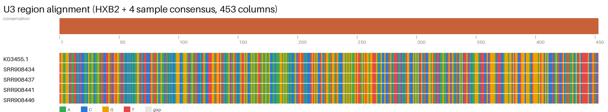

fastp is the better trimmer here — same quality bar, far higher yield and ~3× faster. Host contamination is real and sample-variable: Kraken2 removed ~45% of reads from the most-contaminated sample (SRR908446, ~40% human) vs ~7% from the cleanest — so contamination filtering is essential, not optional.
nodes.dmp (bash/awk, no external taxonomy tool).kraken2_standard_16gb_db/SOURCE.md so it is reproducible.BWA + bcftools consensus is the clear pick for this cohort — full-length (9,719 bp, 0% N) on every sample regardless of depth. SPAdes fragments (420–1,786 bp) and worsens after contamination removal, so de-novo is coverage-sensitive here. SHIVER pending its final fix.
spades=3.15.5 (last pre-4.x release) — runs to completion.bccurl recipe. (2) shiver_init quits because compute nodes lack bc — added bc to the environment (fix in progress; SHIVER re-run pending).--localpair --maxiterate 1000). the review's pick — highest base-pair accuracy on divergent A1/D, needed for precise U3 coordinate mapping.--force.
MAFFT L-INS-i is the pick — the most accurate mode for divergent HIV and also the fastest here. The U3 is near-completely conserved across the 4 samples at the resolution the motif scan depends on.
muscle=3.8* (no AVX2 requirement) — note its CLI differs (-in/-out vs v5's -align/-output).The two-stage filter is viable. HIVSeqinR (explicitly Rakai A1/D-validated) is the primary intactness caller once finalised; HIVIntact is a fast cross-check but subtype-B-biased, so read its A1/D calls with caution.
pkg_resources importsetuptools<81 in its setup — HIVIntact then runs.python -m poplars fails)hypermut.py directly with HXB2 as the first FASTA record (its implicit reference).jpHMM + IQ-TREE 2 is a workable pairing — jpHMM gives per-sample recombination/breakpoint maps, IQ-TREE confirms the clustering. jpHMM dominates runtime (~10 min/sample, run 4×) vs IQ-TREE's ~1 s, so jpHMM is the step to parallelise for the full cohort.
LD_LIBRARY_PATH shadowed a required GLIBCXX version. Fixed the library path in its wrapper so jpHMM loads the correct runtime.-B 1000 for the comparison run; it is re-enabled for the full-cohort tree where bootstrap support is meaningful.iqtree2 vs iqtree3iqtree=2.* to match the review's cited version and the iqtree2 call.| Transcription factor | FIMO | TFBSTools |
|---|---|---|
| NF-κB p65 (RELA) | 10 | 20 |
| SP1 | 5 | 15 |
| NFAT | 0 | 15 |
| TBP | 0 | 20 |
| G-quadruplex | control | subset |
|---|---|---|
| gquad | 3 | 15 |
| pqsfinder | 1 | 5 |
TFBS: both tools agree on the dominant sites (NF-κB p65, SP1); TFBSTools' looser scoring also surfaces NFAT/TBP. G4: gquad flags 15 putative quadruplex sites across the subset U3, pqsfinder a stricter 5 — consistent evidence of G-quadruplex potential in the U3 promoter. All passed the HXB2 control.
lib_compare.sh to time via date without redirecting the wrapped tool's stderr — errors now land in the right log.REPO_ROOT off-by-one broke 7 run-scripts; lowercase U3 gave 0 hitsseqkit grep -n pitfall that had matched nothing.